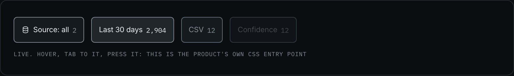
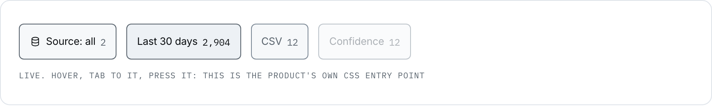
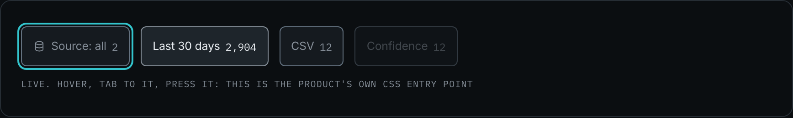
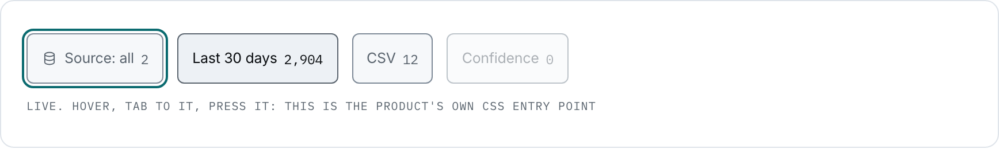

Live. Hover, tab to it, press it: this is the product's own CSS entry point
A chip is a button and never a link: it changes what the current screen shows; it does not travel.
Variants and states
State says whether the facet is applied; content says whether it carries a count. Off 8 · on 4, with a count 9 · label only 3.
The states are drawn from the product's own CSS: hover and focus-visible by _states.js, on by the real class .is-on,
disabled by the real attribute. There is no pressed row because chip.css has no :active rule.
| Facet | State | Off, with a count | On, reads its value | Label only |
|---|---|---|---|---|
Filter chip.chip | Rest | |||
| Hover | ||||
| Focus | ||||
| Disabled |
Properties
| Property | Type | Values | Default |
|---|---|---|---|
| Chip | own class | .chip on a button, never a link | none: the class is required |
| State, on | modifier | .is-on: the on chip reads its value instead of the word "all" | off |
| Count | slot | .chip-count after the label, mono | empty |
| Leading icon | slot | svg.ic, 14px, only where the facet needs a category mark | empty |
| Disabled | attribute | disabled, dimmed by --opacity-disabled | enabled |
| State | variant | rest · hover · on · focus-visible · disabled | rest |
How to use it
When
Filtering in this product is never destructive and never hides the denominator: the scope line under the screen head restates itself whenever a chip changes, so a filtered ranking still says what it is counted from. The chip and the scope line are two halves of one promise, which is why they were designed together and why 2.0 owns both.
A chip is a button and never a link. It changes what the current screen shows; it does not travel.
When not
- To offer one of a closed set inside a form: take
select.input. A chip filters a view; a select answers a question the form will submit. - To mark a state that the person cannot change: take
.tag. A chip is pressable; a source status is not. - To navigate: take
.linkor a tab. A chip that navigates is a link wearing a border.
Where it stands
12 occurrences on 5 screens. The ones already in colour:
Anatomy
| Zone | Class or element | Rule |
|---|---|---|
| the pill | .chip | 44px floor, 6px radius. It is a button, not a link: it changes the view rather than travelling |
| the count | .chip-count | Mono, because it is a value. A count that shifts width between chips cannot be compared along a row |
| the icon | svg.ic, 14px | Only where the facet needs a category mark. Most do not |
Axes, with the rule that chooses
| Axis | Values | The rule that chooses |
|---|---|---|
| state | off 8 · on 4 | An on chip reads its value instead of the word "all". "Source: all 2" becomes "Intercom 30": the filter says what it is doing, not that it is doing something |
| content | with a count 9 · label only 3 | A facet that can be counted is counted. "Group by source" has nothing to count |
| emphasis | not an axis | The on state does NOT take the accent, and that is the decision. Cyan could be read as allowed here, but spending it on a filter puts the one accent in two places at once and dilutes the primary action. The on chip steps up a surface instead |
Tokens it reads
| Reads | Grows from | For |
|---|---|---|
--bg-surface / --bg-raised | --grey-900 / --grey-850 | off, and on |
--line-control / --line-hover | --grey-600 / --grey-400 | the boundary, and hover |
--text-secondary / --text-primary | --grey-400 / --grey-050 | off ink, and on ink |
--line-focus | drawn once in base.css | the one focus ring the whole product uses |
--opacity-disabled | 0.45 dark, 0.50 light | disabled |
| State | Token | What moves |
|---|---|---|
| hover | --line-hover, --text-primary | The border and the ink. The ground does not move, so hover cannot be mistaken for on |
| on | --bg-raised, --line-hover | A step up in surface, and the ink goes primary. Not the accent, by decision |
| focus-visible | --line-focus | The product ring |
| disabled | --opacity-disabled | A facet with nothing behind it. Rare, and it stays legible |
Snapshots, taken with a real pointer
The matrix on Overview is derived; these are measured. The states, both themes, snapshots.
Four snapshots. On and disabled stand in the live row at rest, so photographing them would be an occurrence rather than a difference.
Re-take: node scripts/shoot-states.js chip




Copy this
<button class="chip">Source: all <span class="chip-count">2</span></button> <button class="chip is-on">Last 30 days <span class="chip-count">2,904</span></button>
The filter facet, and the one control in this product that carries its own count. A facet without a count is a filter you have to guess at; with one, the person can see the size of the answer before they ask for it.
File: design/system/components/chip.css. Stands on: 2.0, 3.0, 4.0, 5.0, 6.0. 12 occurrences.
Changes, newest first
| Date | What changed | Record |
|---|---|---|
| 2026-11-20 | The page moved to the card format: Overview, Technical, History. The states became a live matrix drawn from the product's own rules; the snapshots moved to Technical as the measurement beside it | docs/decisions.md, "The showcase is read by purpose" |
| 2026-08-19 | Split out of the flat kit into components/chip.css, with its page among the 17 atoms | commit 2353608 |
| 2026-08-19 | The two tables of facts: chip off 8, on 4, with a count 9, label only 3. .chip rendering in Arial on a button was consolidated as drift: the control base inherits the face | commit 2aa7baa; docs/decisions.md, "The colour stage got its own two-part navigation" (drift row) |
| 2026-08-18 | The census counted the chip as one component with two axes, state (off / on) and content (with count / label only) | docs/decisions.md, "The kit was proved on the seed screens" |
| 2026-08-18 | The chip entered the kit, grown out of the colour layer | commit d461e12 |